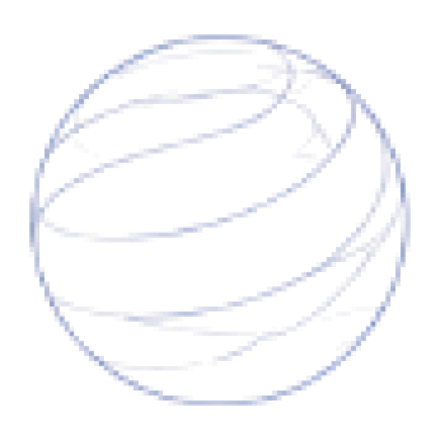
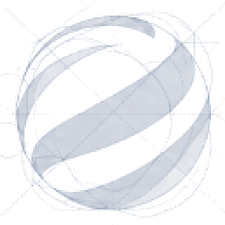
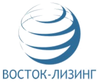
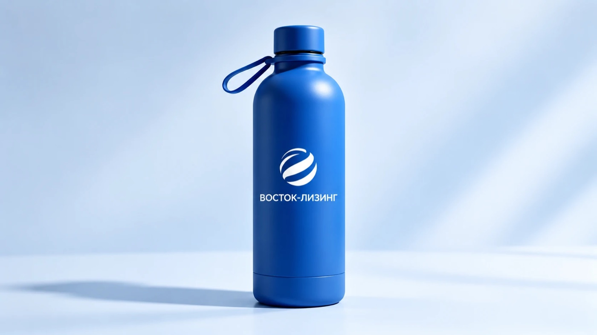
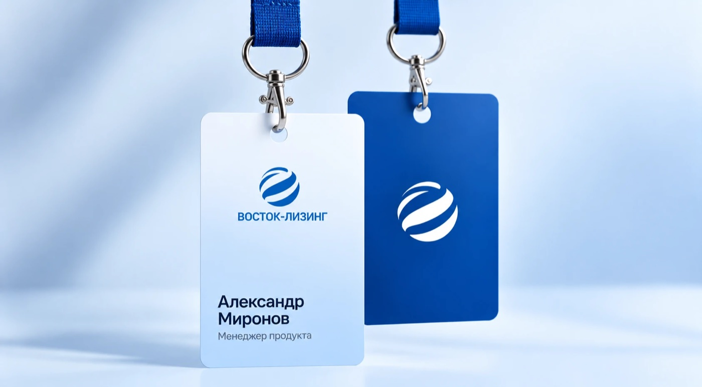
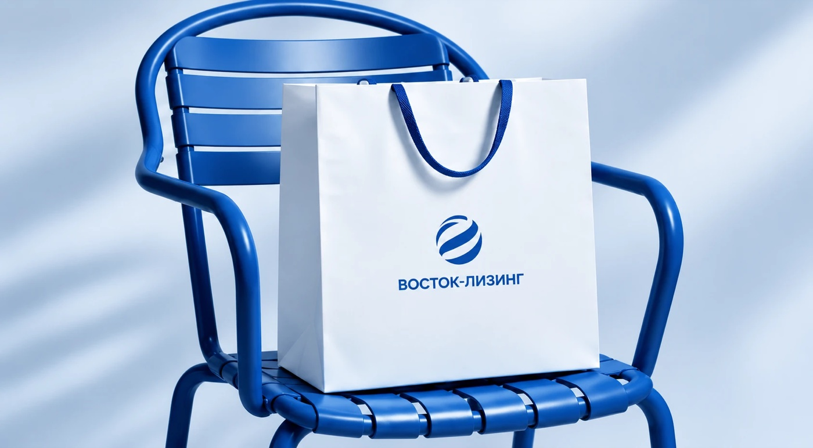
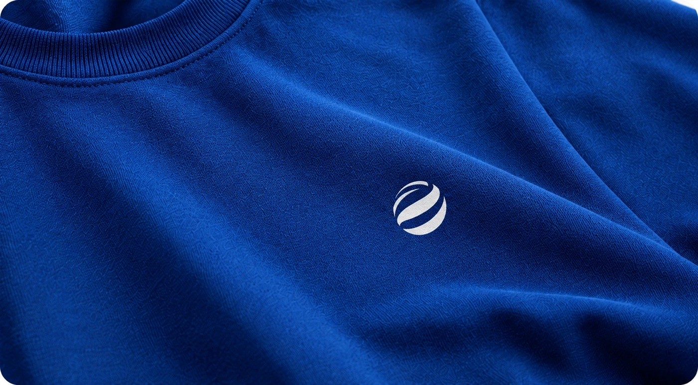

Логотип и знак
Концепция обновлённого знака: идея ребрендинга, конструкция, новый логотип, преемственность, версии знака и примеры использования.
Сохраняем суть, усиливаем характер
Сфера остаётся основой — это актив компании и её узнаваемость. Мы переосмысливаем форму: убираем лишние линии и создаём современный, уверенный и минималистичный знак.
Надёжность
Цельная, устойчивая форма.
Движение
Динамика и развитие бизнеса.
Открытость
Пространство новых возможностей.
Партнёрство
Элементы, собранные в одно целое.
От сложной сферы к чистой форме

1. Исходная идея
Сфера и движение как основа.

2. Упрощение
Убираем лишние линии, оставляем ключевую пластику.
3. Финальная форма
Чистая геометрия, баланс и узнаваемость.
Конструкция
Окружность больше не рисуется — она стала невидимой основой. Внутри неё несколько крупных форм, которые держат узнаваемый силуэт без дополнительных эффектов.
Пластика
Белое пространство — часть знака: оно задаёт движение и глубину, поэтому знак остаётся плоским, без 3D и теней.
Итог эволюции: цельный знак, название в фирменном синем и слоган «пространство для развития» — в одной спокойной и уверенной композиции.
Не новый логотип, а новая форма уже знакомого символа
Геометрия, пластика и типографика пересобраны под современный характер компании.

Было
Сложная конструкция, много линий, буквальное прочтение сферы.
Мы сохраняем
- Сферу
- как главный визуальный код.
- Синий цвет
- как цветовую связь с брендом.
- Движение
- как смысловую основу.
Стало
Более лаконичный и современный знак, сохраняющий преемственность, но более выразительный и уверенный.
Но меняем
- Пластику
- из множества линий в более цельную форму.
- Ритм
- из равномерного в более выразительный.
- Геометрию
- из сложной в чистую.
- Восприятие
- из буквального глобуса в современный символ.
Версии знака
Основной для светлых фонов
Белый для фирменного синего
Белый для тёмных фонов
Монохромный для светлых фонов
Используйте только знак, когда формат маленький: фавикон, аватар, сувенирная продукция. Монохромную версию выбирайте, если в макете уже есть цветная графика или другие элементы бренда.
Бренд в деталях



